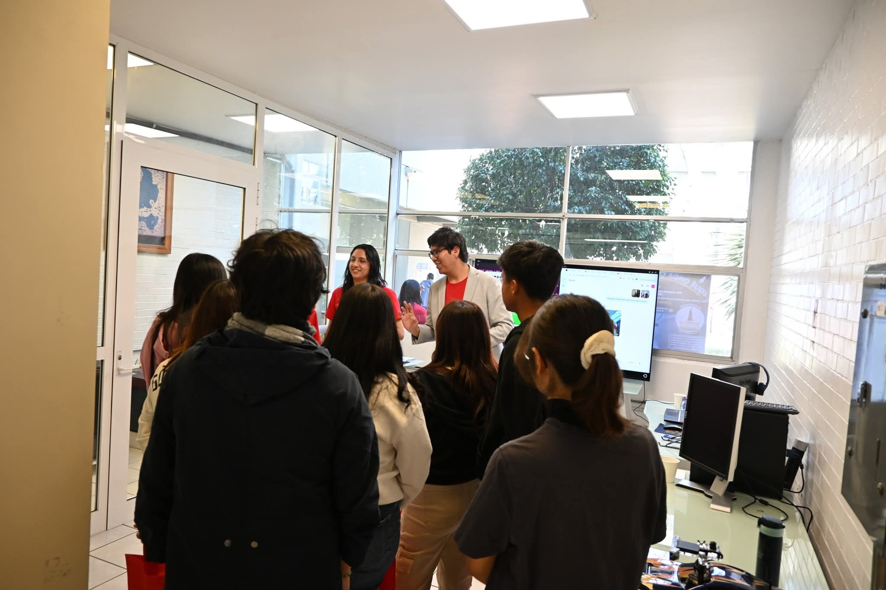

Institute of Physics, UNAM
XRD Crystal Classification & Lattice Parameter Prediction
February 2024 — January 2026 · Ciudad Universitaria, Mexico
Overview
Led the development of a Deep Convolutional Network (U-NET) for crystal system classification from X-Ray Diffraction (XRD) spectra of inorganic compounds. Additionally contributed to the development of a deep convolutional network for predicting lattice parameters from XRD spectra, improving structural characterization accuracy. This work sits at the intersection of materials science, crystallography, and deep learning.
Key Achievements
- Developed a U-NET architecture for crystal system classification from XRD spectra, achieving a remarkably low MAPE of 1%.
- Contributed to a companion model for lattice parameter prediction from XRD spectra, enhancing structural characterization workflows.
- Applied deep learning to inorganic compound analysis, bridging crystallography and modern AI techniques.
- Long-term research engagement (nearly 2 years) demonstrating sustained contribution to materials informatics.
Gallery

